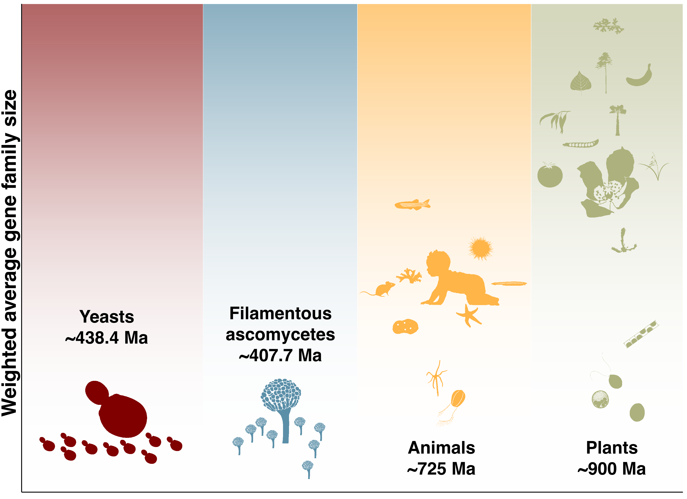

|

|
Unique trajectory of gene family evolution from genomic analysis of nearly all known species in an ancient yeast lineage
Feng, B., Y. Li, H. Liu, J. L. Steenwyk, K. T. David, X. Tian, B. Xu, C. Goncalves, D. A. Opulente, A. L. LaBella, M.-C. Harrison,
J. F. Wolters, S. Shao, Z. Chen, K. J. Fisher, M. Groenewald, C. T. Hittinger, X.-X. Shen, A. Rokas, X. Zhou, & Y. Li.
bioRxiv 2024
| PDF |
Abstract |
Code |
Data |
Gene gains and losses are a major driver of genome evolution; their precise characterization can provide insights into the origin and diversification of major lineages. Here, we examined gene family evolution of 1,154 genomes from nearly all known species in the medically and technologically important yeast subphylum Saccharomycotina. We found that yeast gene family evolution differs from that of plants, animals, and filamentous ascomycetes, and is characterized by smaller overall gene numbers yet larger gene family sizes for a given gene number. Faster-evolving lineages (FELs) in yeasts experienced significantly higher rates of gene losses—commensurate with a narrowing of metabolic niche breadth—but higher speciation rates than their slower-evolving sister lineages (SELs). Gene families most often lost are those involved in mRNA splicing, carbohydrate metabolism, and cell division and are likely associated with intron loss, metabolic breadth, and non-canonical cell cycle processes. Our results highlight the significant role of gene family contractions in the evolution of yeast metabolism, genome function, and speciation, and suggest that gene family evolutionary trajectories have differed markedly across major eukaryotic lineages. |